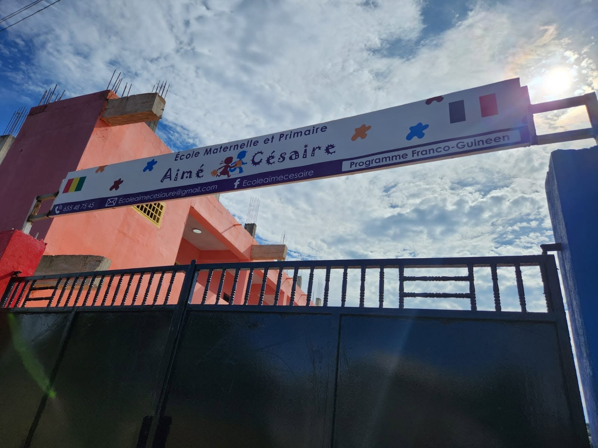
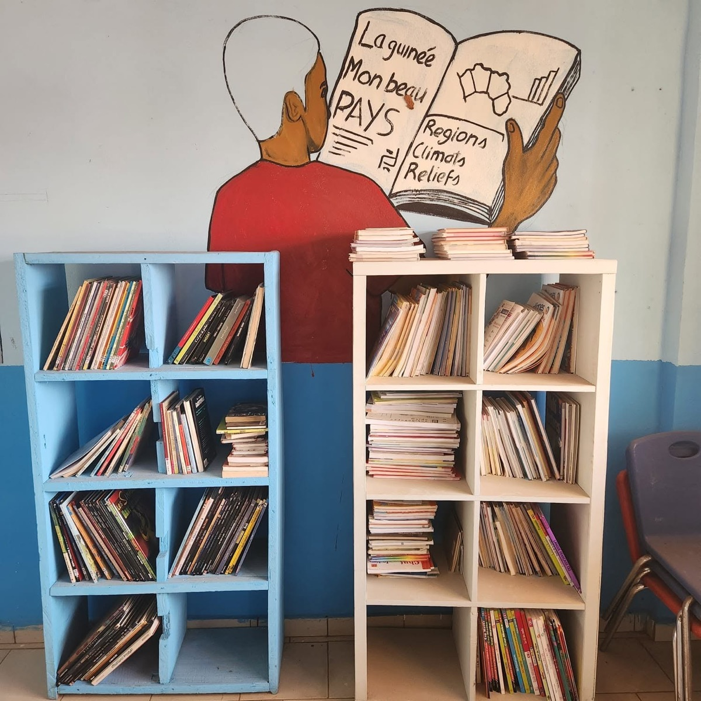
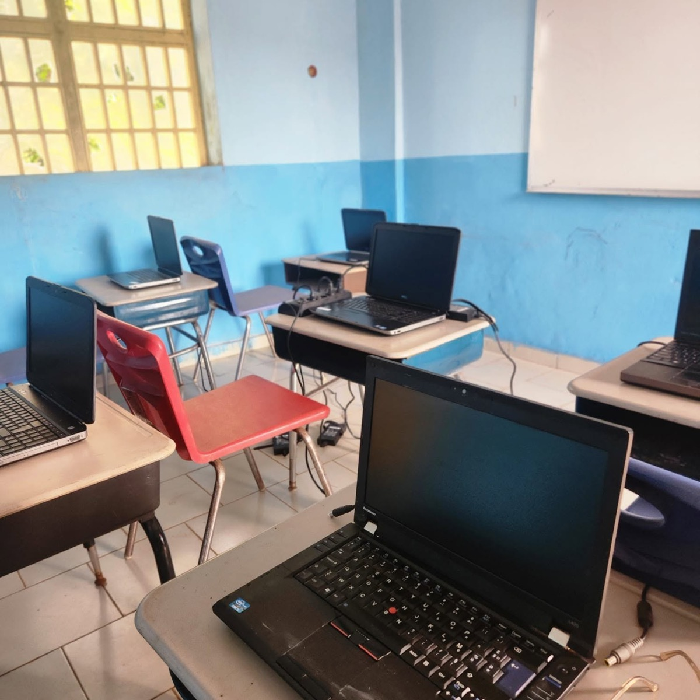

Français
Langue d'instruction principale, travaillée dès le plus jeune âge à l'oral comme à l'écrit.
Mission et cadre
Le Groupe Scolaire Aime Cesaire TKB accompagne les élèves de la maternelle au collège avec exigence, sécurité et bienveillance.
Conviction
Chaque enfant de Samatra mérite un enseignement rigoureux et un environnement qui donne confiance aux familles. L'école met l'accent sur les apprentissages fondamentaux, la discipline bienveillante et l'ouverture sur le monde.

Priorités pédagogiques
Langue d'instruction principale, travaillée dès le plus jeune âge à l'oral comme à l'écrit.
Raisonnement, rigueur et résolution de problèmes au cœur du programme quotidien.
Initiation au numérique dès le primaire pour préparer les élèves aux usages actuels.
Ouverture progressive à une langue internationale utile pour la suite du parcours.
Cadre de vie
Les conditions d'apprentissage font partie de l'enseignement. Les espaces sont pensés pour travailler, lire, jouer et grandir.

Un espace extérieur pour les temps de récréation et les activités encadrées.

Un espace pour développer la culture générale, la lecture et la curiosité.

Une salle équipée pour introduire les élèves aux outils informatiques.
Partenariats
L'école collabore avec des organisations françaises et internationales qui partagent son engagement pour l'éducation.
Ouverture sur l'engagement international.
Appui à des projets solidaires et éducatifs.
Contribution autour du livre et de la lecture.
Accueil de volontaires pour renforcer les actions éducatives.